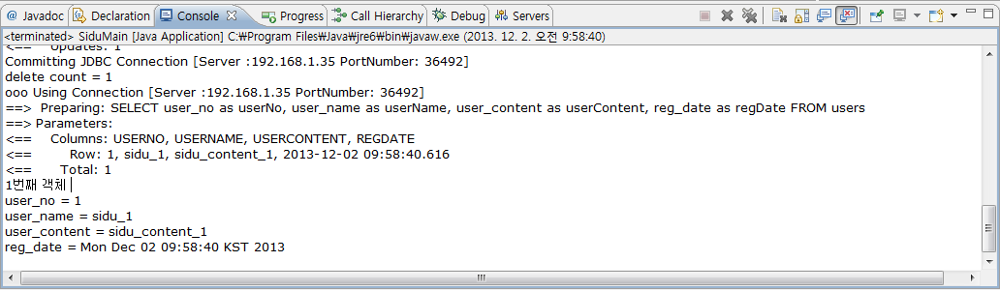

Altibase_mybatis_sidu 예제를 바탕으로 MyBatis에서 ALTIBASE와 연동하는 방법에 대해 좀 더 자세하게 설명한다.
단, IDE는 Eclipse를 사용한다.
DB 테이블 및 시퀀스 생성
DB에 다음의 테이블과 시퀀스를 생성한다.
create table users( user_no integer, user_name varchar(30), user_content varchar(200), reg_date date );
프로젝트 생성
Eclipse에서 altibase_mybatis_sidu 이라는 프로젝트를 생성한다.
1. 메뉴 – File – Java Project 클릭
2. Project name : 에 Altibase_mybatis_sidu 입력
3. Finish 버튼을 클릭
패키지 명명 규칙
부록에서 설명하고 있는 패키지 명은 기본적으로 com.altibase.sidu를 명명하여 사용하고 있는 데 이는 일반적으로 사용하는 패키지 분류 법칙을 가져와 적용한 것이며 각각의 성격은 다음과 같다.
- com : 첫번째 항목은 프로젝트를 이끄는 그룹의 성격을 결정하는 것으로 com은 company를 의미 한다. 만약 소규모 단체 등이라면 org(organization)를 사용할 것이다.
- altibase : 두번째 항목은 자사의 그룹 또는 사명을 정해주는 부분으로 보통 회사라면 회사명이, 특정 그룹이라면 그룹명이 들어간다. 현 문서는 ALTIBASE에서 작성 하였으므로 altibase로 명명 하였다.
- sidu : 세 번째 항목은 실제 이 프로젝트의 artifact 구조를 의미 한다. 현재 Sample은 DML의 일반적인 명령(Select/Insert/Delete/Update)이므로 sidu로 명명 하였다.
Configuration 파일 작성
1. ALTIBASE 연결을 위한 property들을 정의한 properties 파일(db.properties)을 작성한다. ( altibase_mybatis_sidu 프로젝트 – src 디렉토리에서 마우스 오른쪽 버튼 클릭하여 New – File을 클릭한다. File name: 에 db.properties을 작성한다.)
jdbc.driver=Altibase.jdbc.driver.AltibaseDriver jdbc.url=jdbc:Altibase://192.168.1.62:21020/mydb jdbc.username=sys jdbc.password=manager
2. Configuration 파일(mybatis-config.xml)에 ALTIBASE와 연동을 위한 dataSource와 SqlMap 파일을 설정한다. ( altibase_mybatis_sidu 프로젝트 – src 디렉토리에서 마우스 오른쪽 버튼 클릭하여 New – File을 클릭한다. File name: 에 mybatis-config.xml을 작성한다.)
<?xml version="1.0" encoding="UTF-8"?>
<!DOCTYPE configuration PUBLIC "-//mybatis.org//DTD Config 3.0//EN"
"http://mybatis.org/dtd/mybatis-3-config.dtd">
<configuration>
<typeAliases>
<typeAlias type="com.altibase.sidu.model.UserVo" alias="User" />
</typeAliases>
<environments default="development">
<environment id="development">
<transactionManager type="JDBC" />
<dataSource type="SIMPLE">
<property name="driver" value="${jdbc.driver}" />
<property name="url" value="${jdbc.url}" />
<property name="username" value="${jdbc.username}" />
<property name="password" value="${jdbc.password}" />
<property name="poolPingQuery" value="select 1 from dual" />
</dataSource>
</environment>
</environments>
<mappers>
<mapper resource="com/altibase/sidu/mapper/UserMapper.xml" />
</mappers>
</configuration>
Mapper 파일 작성
Users 테이블의 CRUD SQL 구문과 mapping되는 method들을 정의한 Mapper 파일을 작성한다.(Person.xml)
Mapper는 com.altibase.sidu.mapper Package에 작성 하게 된다.
1. altibase_mybatis_sidu 프로젝트 – src 디렉토리에서 마우스 오른쪽 버튼 클릭후 New – Package을 클릭하여 com.altibase.sidu.mapper 라는 신규 패키지를 생성한다.
2. 생성된 신규 패키지(com.altibase.sidu.mapper)에서 마우스 오른쪽 버튼 클릭 후 New – File을 클릭하여 File name: 에 UserMapper.xml을 작성한다.
3. 다음의 내용을 UserMapper.xml에 작성 한다.
<?xml version="1.0" encoding="UTF-8"?>
<!DOCTYPE mapper PUBLIC "-//mybatis.org//DTD Mapper 3.0//EN"
"http://mybatis.org/dtd/mybatis-3-mapper.dtd">
<mapper namespace="com.altibase.sidu.mapper.UserMapper">
<select id="selectUserData" parameterType="Integer" resultType="User">
SELECT user_no as userNo,
user_name as userName,
user_content as userContent,
reg_date as regDate
FROM users
WHERE user_no = #{userNo}
</select>
<select id="selectAllUserData" resultType="User">
SELECT user_no as userNo,
user_name as userName,
user_content as userContent,
reg_date as regDate
FROM users
</select>
<insert id="insertUserData" parameterType="User">
insert into
users(user_no, user_name, user_content, reg_date)
values(#{userNo}, #{userName}, #{userContent}, #{regDate})
</insert>
<update id="updateUserData" parameterType="User">
update users
set user_name = #{userName},
user_content = #{userContent},
reg_date = #{regDate}
where user_no = #{userNo}
</update>
<delete id="deleteUserData" parameterType="User">
delete from users
where user_no = #{userNo}
</delete>
</mapper>
Application에서 Configuration의 insert, update, delete Method를 호출할 때 위의 파일에 정의되어 있는 <insert>, <update>, <delete>, <select> 태그에 정의되어 있는 id와 일치하는 SQL 문들이 자동으로 수행이 된다.
Application 작성
1. users 테이블에 대한 VO(Value Object)객체인 UserVO 클래스(UserVo.java)를 작성한다.
1-1. altibase_mybatis_sidu 프로젝트 – src 디렉토리에서 마우스 오른쪽 버튼 클릭 후 New – Class를 클릭 한다.
1-2. Package:에 com.altibase.sidu.model를 입력하고 Name: 에 UserVo를 입력한다.
1-3. 다음의 내용을 UserVo.java 파일에 작성 한다.
package com.altibase.sidu.model;
import java.io.Serializable;
import java.util.Date;
@SuppressWarnings("serial")
public class UserVo implements Serializable {
private Integer userNo;
private String userName;
private String userContent;
private Date regDate;
public Integer getUserNo() {
return userNo;
}
public void setUserNo(Integer userNo) {
this.userNo = userNo;
}
public String getUserName() {
return userName;
}
public void setUserName(String userName) {
this.userName = userName;
}
public String getUserContent() {
return userContent;
}
public void setUserContent(String userContent) {
this.userContent = userContent;
}
public Date getRegDate() {
return regDate;
}
public void setRegDate(Date regDate) {
this.regDate = regDate;
}
public String toString() {
return "user_no = " + this.userNo + "\n" + "user_name = "
+ this.userName + "\n" + "user_content = " + this.userContent
+ "\n" + "reg_date = " + this.regDate;
}
}
2. DB 연결 및 필요한 메소드를 포함하는 MyBatisUtil.java 클래스를 작성 한다.
2-1. altibase_mybatis_sidu 프로젝트 – src 디렉토리에서 마우스 오른쪽 버튼 클릭 후 New – Class를 클릭 한다.
2-2. Package:에 com.altibase.sidu.util을 입력하고 Name: 에 MybatisUtil을 입력 한다.
2-3. 다음의 내용을 MybatisUtil.java 파일에 작성 한다
package com.altibase.sidu.util;
import java.io.IOException;
import java.io.InputStream;
import java.text.ParsePosition;
import java.text.SimpleDateFormat;
import java.util.Calendar;
import org.apache.ibatis.io.Resources;
import org.apache.ibatis.session.SqlSession;
import org.apache.ibatis.session.SqlSessionFactory;
import org.apache.ibatis.session.SqlSessionFactoryBuilder;
public class MybatisUtil {
private static SqlSessionFactory sqlSessionFactory;
private static SqlSession sqlSession;
public static SqlSession getSqlSessionFactory() {
if (sqlSessionFactory == null) {
InputStream inputStream;
try {
inputStream = Resources
.getResourceAsStream("mybatis-config.xml");
sqlSessionFactory = new SqlSessionFactoryBuilder()
.build(inputStream);
sqlSession = sqlSessionFactory.openSession(false);
} catch (IOException e) {
throw new RuntimeException(e.getCause());
}
}
return sqlSession;
}
public String NulltoStr(String str) {
if (str == null) {
str = "";
}
return str;
}
public String getFormatDate(String date, String originalformat,
String wantformat) {
java.util.Date d = null;
SimpleDateFormat dd = new SimpleDateFormat(originalformat);
ParsePosition parse = new ParsePosition(0);
d = dd.parse(date, parse);
Calendar cal = Calendar.getInstance();
cal.setTime(d);
SimpleDateFormat sdf = new SimpleDateFormat(wantformat);
String day = sdf.format(cal.getTime());
return day;
}
}
3. MybatisUtil 클래스로부터 SqlSession 객체를 받아 쿼리를 수행하는 클래스를 작성 한다. 예제에서는 DML 각각의 처리에 대한 클래스를 별도로 선언하여 처리 하였다. 해당 예제에서는 Select에 대한 예시만 설명 한다.
3.1 altibase_mybatis_sidu 프로젝트 – src 디렉토리에서 마우스 오른쪽 버튼 클릭 후 New – Class를 클릭 한다.
3.2 Package:에 com.altibase.sidu.application을 입력하고 Name: 에 SiduSampleSelect를 입력 한다.
3.3 다음의 내용을 SiduSampleSelect.java 파일에 작성 한다.
package com.altibase.sidu.application;
import java.sql.SQLException;
import java.util.List;
import com.altibase.sidu.model.UserVo;
import com.altibase.sidu.util.MybatisUtil;
public class SiduSampleSelect {
public UserVo SiduSelect(int user_no) {
UserVo userVo = new UserVo();
try {
String statement = "com.altibase.sidu.mapper.UserMapper.selectUserData";
userVo = MybatisUtil.getSqlSessionFactory().selectOne(statement,
user_no);
return userVo;
} catch (Exception e) {
throw new IllegalArgumentException(e);
}
}
public List<UserVo> SiduSelectList() throws SQLException {
String statement = "com.altibase.sidu.mapper.UserMapper.selectAllUserData";
List<UserVo> userVos = MybatisUtil.getSqlSessionFactory().selectList(statement);
return userVos;
}
}
4.실제 프로그램이 수행되는 Main 클래스를 SiduMain.java 파일에 작성 한다.
package com.altibase.sidu.application;
import java.util.Calendar;
import java.util.List;
import com.altibase.sidu.model.UserVo;
public class SiduMain {
/**
* @param args
*/
public static void main(String[] args) {
UserVo userVo = new UserVo();
int user_no = 1;
int res_count = 0;
try {
// Insert 예제
userVo.setUserNo(user_no);
userVo.setUserName("sidu_1");
userVo.setUserContent("sidu_content_1");
userVo.setRegDate(Calendar.getInstance().getTime());
SiduSampleInsert sidu_insert = new SiduSampleInsert(userVo);
res_count = sidu_insert.SiduInsert();
// Select 예제
SiduSampleSelect sidu_select = new SiduSampleSelect();
userVo = sidu_select.SiduSelect(user_no);
System.out.println(userVo.toString());
// Insert 예제
userVo.setUserNo(5);
sidu_insert = new SiduSampleInsert(userVo);
res_count = sidu_insert.SiduInsert();
System.out.println("insert count = " + res_count);
// Update 예제
userVo.setUserName("sidu_5");
userVo.setUserContent("sidu_content_5");
userVo.setRegDate(Calendar.getInstance().getTime());
SiduSampleUpdate sidu_update = new SiduSampleUpdate(userVo);
res_count = sidu_update.SiduUpdate();
System.out.println("update count = " + res_count);
// Delete 예제
user_no = 5;
SiduSampleDelete sidu_delete = new SiduSampleDelete(user_no);
res_count = sidu_delete.SiduDelete();
System.out.println("delete count = " + res_count);
// Select All 예제
List<UserVo> userVos = sidu_select.SiduSelectList();
for(int i=0; i<userVos.size(); i++) {
userVo = userVos.get(i);
System.out.println((i+1) + "번째 객체 ");
System.out.println(userVo.toString());
}
// 동일한 테스트를 두 번 반복 했을 때, user_no가 1인 데이터가 2개가 되어 select만 수행되고
// 프로그램이 Terminate 될 수 있어서(SelectOne 메소드 사용) user_no가 1인 데이터도 삭제해 준다.
user_no = 1;
sidu_delete = new SiduSampleDelete(user_no);
res_count = sidu_delete.SiduDelete();
}
catch(Exception e) {
e.getStackTrace();
}
}
}
관련 JAR 파일 추가
Altibase.jar와 mybatis-3.2.8.jar 파일을 추가한다.
altibase_mybatis_sidu 프로젝트에서 마우스 오른쪽 버튼 클릭하여 Properties를 클릭 – Java Build Path – Libraries 에서 Add External JARS를 클릭하여 Altibase.jar와 mybatis-3.2.8.jar 파일을 추가한다.
Application 실행
altibase_mybatis_sidu 프로젝트를 실행한다.
altibase_mybatis_sidu 프로젝트를 클릭한 후 메뉴에서 Run을 실행하거나 com.altibase.sidu.application 패키지의 SiduMain.java 클래스를 더블 클릭하여 파일을 연 후에 Run을 실행 한다.

{kind=link}
{kind=link}
{kind=link}
{kind=link}
{kind=link}
{kind=link}
{kind=link}
{kind=link}